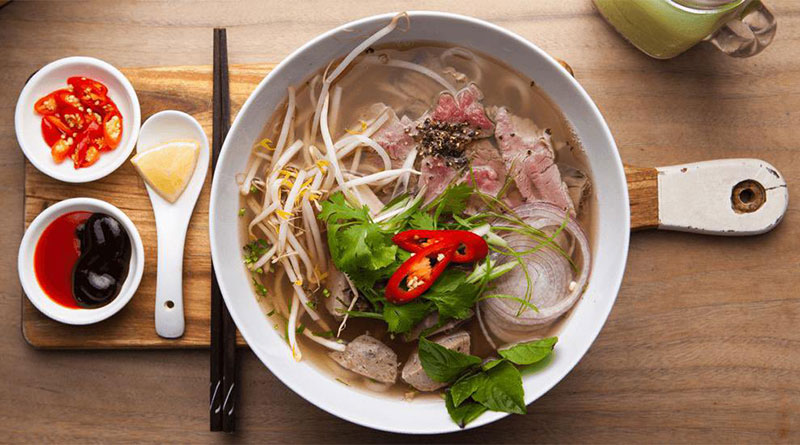

Pho

Description
Pho is a Vietnamese soup dish that consists of rice noodles, thinly sliced pieces of meat, bean sprouts, fresh herbs, lime, spices and other garnishes. All these ingredients reside in the bone broth soup.
Ingredients
- Bone Broth
- Rice Noodles
- Sliced Beef
- Bean Sprouts
- Chili Oil
- Lime
Steps
- Boil Noodles and strain into a bowl
- Pour the pho bone broth over the noodles
- Add raw sliced beef and let the temperature cook it
- Add bean sprouts, chili oil and lime to taste
Back to Homepage